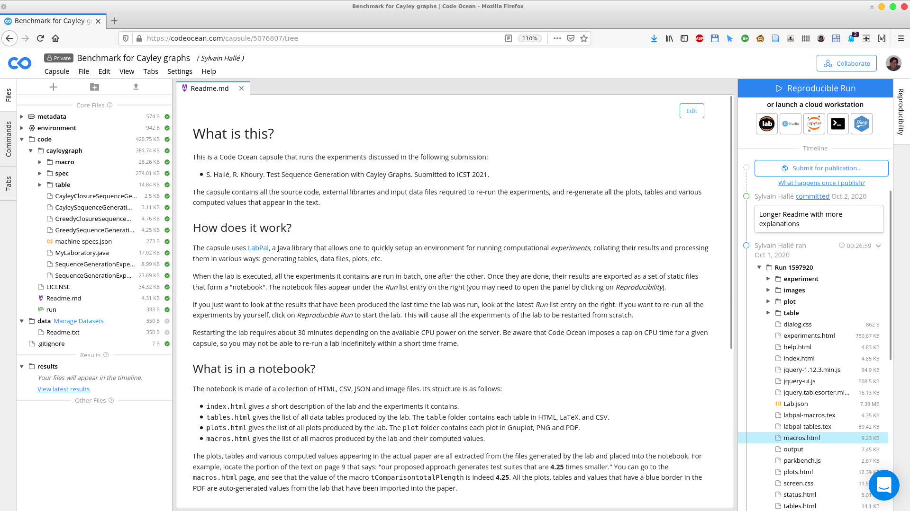
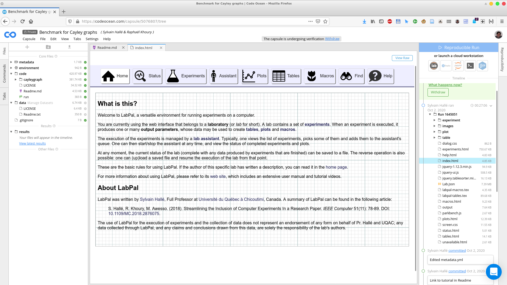
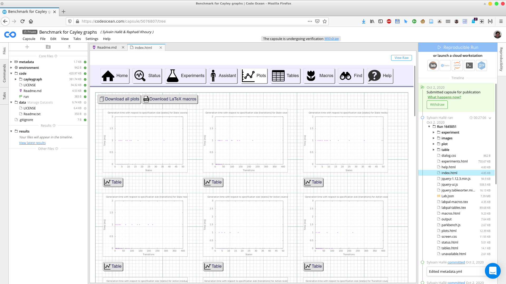
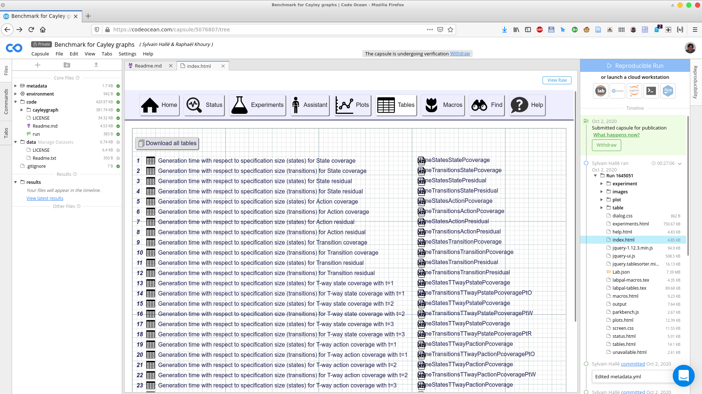
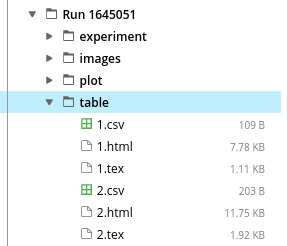
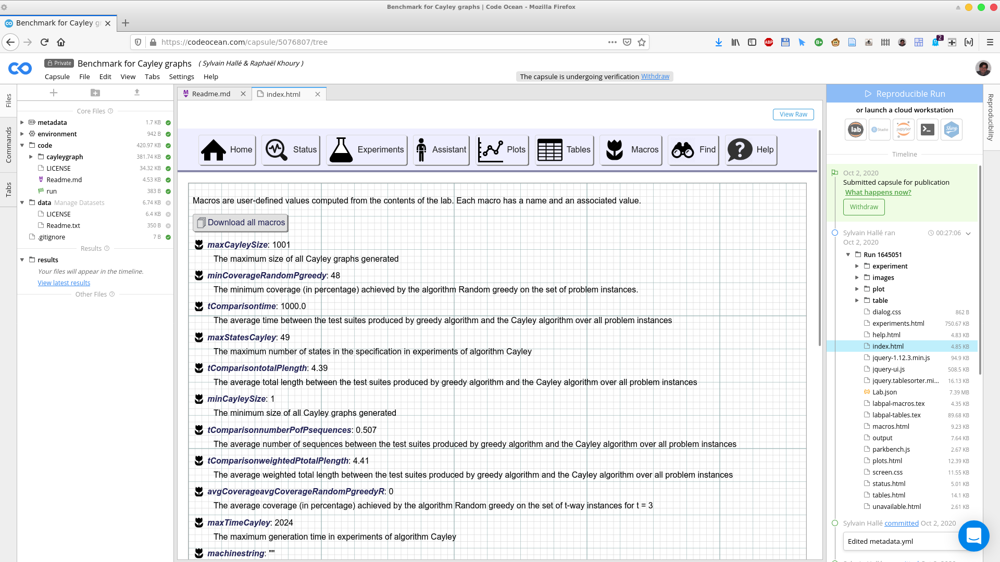

In this short tutorial, you will learn how to use an instance of LabPal hosted in a Code Ocean compute capsule. This document is especially aimed at referees of conferences and journals whose task is to review an artifact and ensure the results provided in a submitted paper are reproducible.
First, let us recall that Code Ocean is a platform that hosts self-contained pieces of code and data that are called capsules. Capsules can be executed and produce results in the form of various data files; what is more, the platform keeps track of each of these executions in a log, such that anybody can unambiguously refer to the results of a specific run of the capsule and examine the complete execution that produced them, including source code.
On top of this, LabPal is a Java library that helps structuring and coordinating the execution of computational experiments. Its aim is to reduce the amount of low-level scripting necessary to run programs, process data, generate tables and plots, and include these results inside a research publication. This is done by creating a high-level object called a Laboratory, inside which are added multiple instances of various Experiments, each taking input parameters and producing output results.
Quick links:
The Code Ocean interface
The screenshot below is what you should normally see when opening a compute capsule that uses LabPal.

The panel on the left shows various folders containing both the data input files used by the lab, as well as the Java source files that make up the lab itself. The center panel displays a description of the lab, and will also be used to browse through the results it produces. Finally, the panel on the right shows the history of modifications of the compute capsule, as well as the history of all the occasions where it was executed (these are called runs, which have a unique number and a date).
When the lab is executed, all the experiments it contains are run in batch, one after the other. Once they are done, their results are exported as a set of static files that form a "notebook". The notebook files appear under the Run list entry on the right. For example, in the screenshot above, you can see a list of folders and files under the entry called Run 1597920.
- index.html gives a short description of the lab and the experiments it contains.
- tables.html gives the list of all data tables produced by the lab. The table folder contains each table in HTML, LaTeX, and CSV.
- plots.html gives the list of all plots produced by the lab. The plot folder contains each plot in Gnuplot, PNG and PDF.
- macros.html gives the list of all macros produced by the lab and their computed values.
Your entry point to the lab's results should be index.html. Click on this file in the right-hand side pane; this will open a new tab in the capsule's browser, showing the index page of the LabPal interface.

From this point on, you are exploring the results produced by the lab from within the Code Ocean browser.
Viewing plots
Clicking on the Plots button in the LabPal interface brings the summary of all plots:

Clicking on a plot brings an enlarged picture of that plot; clicking on the Table button under a plot shows the data table from which the plot has been created.
Should you wish to download a plot, you can look in the images folder of the capsule's right pane, and fetch the files corresponding to the plot's ID, either in PNG or PDF format, or as a GnuPlot input file. Unless otherwise mentioned, all the plots that appear in the submitted paper are taken directly from one of the files generated by the designated run of the laboratory.
Viewing tables
Tables are two-dimensional arrays whose content is obtained by fetching parameters and values from a set of experiments. They can be imported in a paper directly, or be used as the source for a plot. Clicking on the Tables button shows the list of all tables produced by the execution of the lab:

Each table has a unique ID, a descriptive title, and a "nickname". Clicking on a table shows its contents in the browser. Should you wish to download the contents of a table, you can look in the table folder of the capsule's right pane, and fetch the files corresponding to the table's ID, either in CSV, HTML or LaTeX format:

Viewing macros
Macros are values (either strings or numbers) computed from the results of experiments. For example, a macro could calculate the average of the running time of all experiments, or the maximum value of some output result produced by a subset of the experiments. An important feature of macros is that they can be exported as LaTeX code, and hence provide a direct link between hard values appearing in the paper and the results of a run of the laboratory.
The Macros page displays the list of macros: for each, one can see a shorthand "nickname" (used in LaTeX code to refer to them), a textual description, and its computed value.

Data linking features
In LabPal, each datapoint has a unique ID that can be used to track how its value was computed. Clicking on a cell in any table brings a page that describes the provenance tree of that cell --i.e. the sequence of derivations and intermediate datapoints used to calculate its value. Files whose name is of the form Tx.x.x.html are provenance trees for each individual datapoints. Additionally, the trees can also be viewed graphically by clicking on the file of the same name, but with the SVG extension.
Re-running the lab
If you just want to look at the results that have been produced the last time the lab was run, look at the latest Run list entry on the right. If you want to re-run all the experiments by yourself, click on Reproducible Run to start the lab. This will cause all the experiments of the lab to be restarted from scratch.
Depending on the number and nature of experiments contained in the lab, completing a run can take a long time. Be aware that Code Ocean imposes a cap on CPU time for a given capsule, so you may not be able to re-run a lab indefinitely within a short time frame.
Examining the source code
You can examine the code files in the left pane to see how the lab is compiled and where dependencies are obtained from. In a nutshell:
- The environment folder contains the scripts that setup the environment: installing packages (Dockerfile), and downloading any required dependencies (postinstall).
- The code folder contains the script run, which compiles the source files and executes the lab instance.
- Within code are subfolders containing the Java source files of the laboratory. The starting point of your exploration should be the class that defines the lab and adds the experiments and tables to it (its usual name is MyLaboratory, but this may be overridden by the author of the lab).
- A LabPal capsule typically does not use the data folder, so there is nothing there to see.